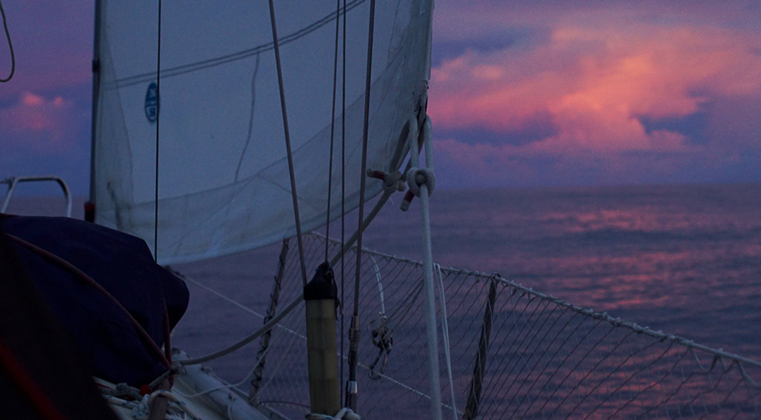
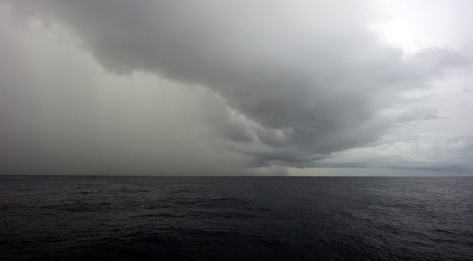
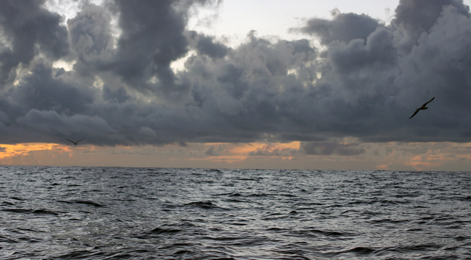
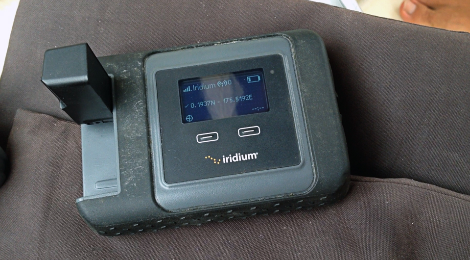
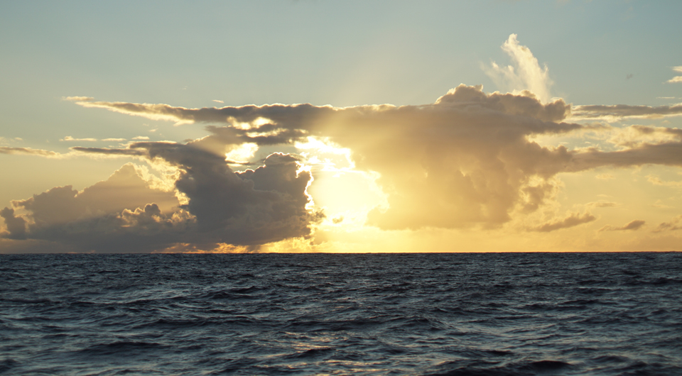

doldrumming
- Goodbye Fiji
- Squalls
- Visitors
- Change of plans
- Passing the equator again
- Breakages aboard pino
- Sailing into majuro atoll
- Mieco beach yacht club
Goodbye Fiji
Here we go again, time for another passage. We left Fiji on October 23rd 2018, eager to spend some time on the water again. Our plan, was to stop by Tuvalu, maybe Kiribati, before arriving in Majuro in the Marshall islands where we'd be spending two months before moving off west to Micronesia. We left, knowing that this was wasn't going to be an easy ride...
Two areas of calms lie north of Fiji: the SPCZ (south pacific convergence zone) and the ITCZ (intertropical convergence zone). If you look at windy, hovering around the countries of Tuvalu and Kiribati are two bands of blue - blue means there is no wind. The size and location of these bands varies from day to day, week to week.. they phase in and out of existence with the weather and influence of the trade winds.
Sailors fear these blue bands because the weather there is difficult, not only do you suffer calms, but also a continuous ballet of squalls and thunderstorms. We've been through the doldrums (the ITCZ) once already when we crossed from Mexico to the Marquesas.
Squalls
Why do some sailors fear being becalmed at sea? Before we made the pacific jump, some admitted carrying enough fuel to carry them across an ocean and that in quiet times they wouldn't hesitate to use the 'iron wind'. More recently, another couple we met told us this:
- 'You're just a sitting duck! Waiting for squalls to come at you!'
Okay. Saying you're a sitting duck, implies that you're a thing with no protection against an attack or other source of danger. How is that true? Offshore sailboats are like mobile bunkers, besides, squalls last 20 minutes on average, just the time it takes for it to get past you, or for you to get past it. They hardly ever blow above 30 knots, you get wind out of it, and if you're reefed down properly (made your sail real small) and ready there's really nothing to fear! If really it is too much for you, you can always turn your back to it and run while it goes away, or heave to. These puffy beasts are hard to miss, their coming shouldn't be a surprise to you.
We, sailors, are not sitting ducks, we are FRIGATE BIRDS and like them, we are fearless and can soar on wind currents. We catch every bit of air we can get to stay in flight, soaring and biding our time.
We were looking forward to crossing paths with these impressive cloud formations again because we'd read of sailors making use of them to propel themselves onward on a quiet ocean, and this is exactly what we'd planned on doing. When we saw one we'd present the curve of our sails and stick out our thumbs.
- 'HEY! Over here! Come and pick us up!'
Though if you're standing still, chances are the squall will pass you by...
- 'Hey sorry!' the squall would say. 'I'm going this way. Sorry!'
As it went away, as did any hope of forwardness.
Sometimes we'd turn the engine on, to try and get ourselves moving to get in their way. We didn't make a habit of this, Pino is not a big boat and we don't carry much fuel aboard.
- 'Is this a good reason?'
We'd ask ourselves.
- 'Naw, better off bobbing on the water some more.'
The only times we did turn it on, was when the wind had just passed, leaving big waves in its wake. Not having wind to fill your sails on bumpy seas is a most irritating experience. The boat pitches and rolls as it gets tossed around, the sails flap as the mast swings like a mad pendulum - it feels like the boat is getting ripped apart and I too, feel like my patience is being torn away bit by bit. During such moments I curse and swear, my anger rises to dangerous levels and before I go full-on Godzilla I somehow gather sufficient mental clarity and cool to turn on the engine - when the boat is moving, the motion isn't nearly as bad and it's usually enough to calm me down.

- 'Fucking waves, fucking weather. AH- the hell with this LIFE! Fuck boats! FUCK the ocean...!'
Yup. Ocean times are not always pleasant. We do lose our cool from time to time... luckily, Devine & I are never angry or irritated at the same time, usually one is feeling good enough to work the other back into a good mood.
While becalmed on the water, there is no breeze and when near and around the equator let me tell you, it is HOT. When we became mostly sweat, we'd go on deck and scoop up buckets of sea water to empty over our heads. Ahhh - lovely. Then, we'd spend the next hour picking bits of salt off our skin. Clothes were optional on this passage, whatever we'd wear just ended up soaked in body water within seconds.
Being out there was more pleasant with a good breeze, which we would get every 3-4 days for 2 days. When downloading the weather, we'd always see a patch of blue coming into view ahead of us. "More bobbing times ahead", Devine would say.
Visitors
We did have some visitors to help distract us from the lack of weather, a pod of dolphins accompanied us for a while, and a masked booby came to land on the end of our boom one night.
I watched it, balancing itself with its feet and tail, it stayed there a while, then decided to land on the tiller as i was driving. My hand was on the end of that same tiller, just a short distance from it. I looked at the bird then...
- 'Are you serious? Is this where you want to be?'
The large feathered nuisance didn't react.
- 'Really? Here?' I asked again.
The bird then took off, perhaps annoyed by my incessant glaring and came to sit on the top of the radar post instead.
- 'Good' I said then. 'That's a good place for you, you can stay there, but just so you know - the tiller is off-limits.'
At this point I had good relationship with this bird, I liked having it around, but the love story ended when it began to shit in a torrential fashion.
- 'Okay.' I thought, 'It's not that big a bird, it'll stop shitting at some point.'
It didn't.
Devine's shift started then, I went to bed, and when I woke up again I looked at the life raft, and our solar panel and was horrified at the sight of it all covered in drippy and stinky bird shit.
- 'It hasn't stopped shitting,' Devine said, looking desperate and equally horrified. 'I tried to shoo it off but it keeps coming back!'
Our guest had overstayed its welcome. I spent my entire shift shooing it off of the radar post by brandishing a cushion at it. It probably thought my attempts at getting it to leave were feeble, using a soft weapon and all, I didn't want to hurt it but did my very best to keep it from getting too comfortable. It would take off when it got too annoyed, then come back to try and land again, I'd shoo it off some more with the cushion, then it circled back around to land again... we did this for 2 hours, and then eventually it decided that this perch wasn't worth the trouble and sought a new one on Pino's bow on the pulpit rail.

- 'FINE!' I shouted. 'Stay there!'
At least we didn't eat, sleep or spend much time over there.
- 'SHIT ALL YOU WANT! I DONT CARE!'
I did care though because this bird had outsmarted us, it had found a new place to shit aboard Pino. We named this bird Clippy, because it had a feather missing in one wing. We saw Clippy again later, hovering above us with another of its kin. We feared we'd get twice the bird poo if we allowed Clippy and its friend aboard... but they decided Pino wasn't very inviting and sought a more friendly float.
Clippy wasn't our only visitor, when we left Fiji we left with 3 geckos. The first one we saw was in the mainsail as we hoisted it, we saw it scurry up the sail.
- 'No don't go up there! THERES NOTHING FOR YOU THERE'
We yelled, fearing that it would fall overboard - it didn't listen, but it also didn't fall overboard because we found it again in the anchor locker.
The other two, we saw hiding in the dodger, they would come out when the sun was low and the temperature dropped to look for food. Pino did have some insects aboard; a real gecko buffet! This was an ideal arrangement, they get to stay, while they help rid us of bugs - good deal! Every evening, we'd wait for gecko hour, and watch them walk around the deck. Geckos make good boat pets. They're non intrusive, non destructive, they eat undesirables and are cute as hell.
Change of plans
We had planned on stopping in Tuvalu in this trip, but we decided not to in the end. Why? Because the wind was good, and we just wanted to be out there. We had no desire to be back on land just yet. Crazy, we know.
- 'So you want to be out there? Longer?'
- 'Um. Well. Yea! It's great! You can spend hours staring at the horizon daydreaming, planning future projects and brainstorming ideas for stories. There's no one around to disturb you, to tell you you have to do something else, no deadlines, no pressure either!'
So we went past it, taking advantage of the 3 days of good wind that was forecasted (in truth, it ended up being 2 good days, because weather forecasts in that area are just not very reliable).

The two good days though, did get us over to the first islands of Kiribati. Then, we were becalmed again, stuck between 3 islands with weak winds coming straight out of the north. We can't make good progress with winds coming out of where we want to go, so we'd tack west... than east, than west again. We'd sail between the same two points making no real progress at all. That day, i think we made 10nm northward. We got a text from Devine's dad.
- 'Slow day huh?'
We always feel a bit self-conscious about our progress, knowing people are watching and calculating the distance we make each day.
- 'Only 40nm?! Yeesh. Are you on a boat or a piece of driftwood?'
We did eventually get out of there, the wind fell back to the south east and we were able to make some good progress again.
We don't always read, or spend time thinking on long passages, we also nap a lot ( in the beginning anyway). Devine ran out of podcasts early on, and had the idea of ripping the audio from films or series. We'd listen to the audio from Lost in translation, Howl's moving castle and 30 Rock while driving at night. I'd laugh alone in the dark, listening to conversations between Liz Lemon and Jack Donaghy.
In the evenings, we'd wait for the moon to rise, or set, then one night we noticed a cheshire cat-like grin in the sky.
- 'WHOA the moon is side ways! It's lit from the bottom!' Devine gasped.
We thought that maybe this was because we were at the equator, we still don't know what causes it, but it looked beautiful there... like a silver bowl, ready to collect the shooting stars that fall too near to it.
Passing the equator again
Pino and its crew had passed the equator back into the northern hemisphere. We sent a text to our parents then: 'Hey! We're in the same hemisphere again!' The last time we crossed it was in march 2017, now, we'd done it again in November 2018 20 months later.
When we arrived in the waters between Kiribati and the Marshalls, we began to feel more current pushing us from west to east, and saw large waves carrying refuse. Of all the time we've spent on the ocean, I've never caught sight of so much trash in the water. Every two minutes I'd spot a plastic bottle, some unidentified colored container, styrofoam... and once, a long orange tube undulating in the waves. We hadn't seen another human in over 20 days but here were clear signs of their proximity. I looked to my left and saw yet another floating piece of garbage.
- 'Oh no wait it's a bird. OH nope - it's a bird sitting ON a piece of garbage.'
The bird was using a plastic bottle as a float, unlike me, the bird didn't give a shit about it being there. In fact, it seemed to think it rather convenient.
Breakages aboard pino
Pino Island we managed to keep relatively clean, our bit of personal trash compressed into bags. We take care of our home, although sometimes things do get messy and items do break. One of the slides on our mainsail broke off, leaving a big portion of the sail detached from the mast. This causes air to pass between the luff and the mast and disturbs the shape of the sail while putting more pressure on other slides and slugs (we have 4 battens in our main). We could see then that another slide was about to break, half of it had snapped off already and so we reinforced it and hoped it would get us to Majuro - it did. In fact, it broke off entirely just as we were tacking back and forth to the anchorage inside the lagoon.

This breakage, we believe, was due to us raising the main while not undoing the reef, a dumb, lazy and costly mistake that we've since corrected - I feel we're still learning how to sail. Don't think we're done making bad mistakes. We carry one spare slug in the boat, but we'll have to get others, or jury-rig something that can get us to Japan.
Sailing into majuro atoll
Getting into Majuro was tough, we were on the east of the island, and had to pass between it and another at night in 25-30 knot winds. We were worried about the current running between the islands, but at least the island on the east shielded us against the worse of the waves.
We arrived at the entrance to the lagoon at 8am, the waves at our backs with the wind coming out strongly out of the north-east. Throughout most of our trip, we had moderate winds, now, just as we were arriving we had the strongest blows of the trip. Our arrival into new countries is always boisterous.

Getting into Catalin pass was easy, it being well-marked and wide, the problem came after that; the main city lay on the easternmost point of the lagoon, we'd have to sail into the wind - I did mention the wind was quite strong too didn't I? The town, as well as the anchorage, was 10 nautical miles away. This is nothing. We should have reached our destination under 2 hours but it took us about twice that time since we had to do long tacks to go forward. We were close-reaching, Pino handles that well enough most times but the problem today was the broken slugs in our main. We didn't like the shape of our mainsail, it was ballooning in weird ways, and that's when the slug for the upper batten broke off. We needed to keep the main up to go forward, the boat can't sail into the wind without a mainsail and our engine isn't strong enough to get us past these waves. Having to push something that is damaged past its limit is always worrisome, both of us fell quiet, eyes fixed on the top of the main.
Hold on Pino, we're almost there!
We tacked between the numerous large fishing and cargo ships anchored in the lagoon, hoping one of them wouldn't raise anchor and start to move; the last thing we needed was to start dodging moving targets.

At this point, both of us were tired. Exhausted. Neither of us felt like doing endless tacks... the skies were grey, squall clouds in every direction, winds gusting to high 30's at times. Devine was feeling pretty down by then, we were making progress, but it felt unending. As i said before, when one of us is low, the other by default is almost always in a good mood. I was being extra positive, trying to make a game of it, pointing out all of the weird and funny features of the ships we'd sail past.
Mieco beach yacht club
We could hear locals chattering on the radio then, using CH16 to exchange pleasantries in Marshallese. It hit us then. After 24 days at sea... we're hearing people's voices! OTHER PEOPLE'S VOICES. This was real. Land was within reach! I looked ahead, and saw... MASTS!
- 'Boats! Sailors...! MOORING FIELD! Which means PANCAKES!'
If you must know, we always have pancakes after arriving into a new country, it's our little tradition. We ran out of maple syrup in New Zealand, but we're still making em'! Now we dip them in pekmez (mix of tahini and fruit molasses) or do a savoury thing with olive oil and balsamic vinegar.
- 'PANCAKES! PANCAKES!'
We chanted as we moved into the mooring field. I hailed the local yacht club on the radio to ask about the moorings.
- 'Mieco Beach yacht club this is Pino! We've just arrived from Fiji!'
- 'Fiji? Good on you! Welcome to Majuro Pino!'
They told us that there were two mooring fields, one north and one south. We were heading towards the northern field, since it was closest to where we were...
- 'Pick up whatever mooring you can find!'
We did just that, spotting a free one behind an American yacht. All of the boats were American - makes sense, since the Marshalls is a US associated state. I picked up one of the moorings, its line thick with sea slime, algae and other marine growth and secured Pino to it. My hands smelled like fish, but no matter...
We. Are. Here.
We forgot all the badness of the 4 previous hours, the tacking in shit conditions, our damaged slides and slugs, our salt-pickled bodies - all of that went away. We'd arrived. We made it. We sailed for 24 days without stopping, a trip almost as long as the one we did from Mexico to the Marquesas. Our arrival date, was November 15th 2018.
Like every other arrival, after many days at sea, we just wanted to lie down and sleep on a stomach full of pancakes... but no, we had to go ashore to check in.
Ah - the irritating dealings with foreign immigration and customs officials! It is hardly ever pleasant, but this is another story in itself. A story of a sinking dinghy, confusion and endless cab rides, to be shared soon once the painful memories of it subside.
**Update** I have since written a blog post about our arrival, it's called The Promise of Pancakes. You can also watch the video we made of our time at sea!
If you like our content, consider supporting us on...
PATREON